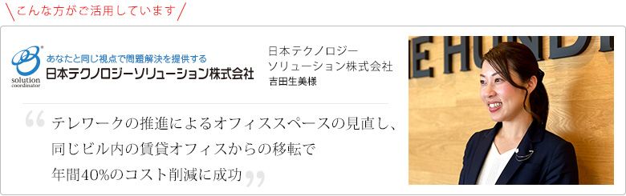
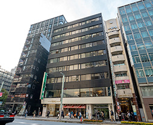
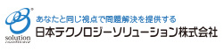

お客様の声
ご利用事例

企業紹介
様々な問題解決型事業を行う日本テクノロジーソリューション株式会社にレンタルオフィスの活用に至った背景やその効果についてお伺いしました。

ご利用いただいているセンター :オープンオフィス
日本橋セントラル
『日本橋』駅から徒歩0分。『東京』駅からは徒歩7分。
日本橋という高い知名度と東洋ビルという物件も、ビジネスには魅力的です。百貨店、ショッピングビルも目の前の日本橋中央通りに面するロケーション。
新たなエリア開発によって、更なる活気に満ちています。
御社の事業展開について教えてください。
日本テクノロジーソリューション株式会社では主に２つの事業を行っています。まず、ペットボトルの包装フィルムを縮める機械である「シュリンク装置」の製造販売をしている部門があります。他には、メーカー様の製品プロモーション用の映像制作部門があります。
入居しているオープンオフィス 日本橋セントラルには、営業と映像制作部門が所在しています。
レンタルオフィスの入居に至った経緯とリージャスを選んだ理由をお聞かせください。
2020年4月頃から本格的に突入したコロナ禍がきっかけでした。これまで週に５日出社していましたが、緊急事態宣言を機に出社は週１日で在宅勤務をメインとしました。自宅でも通常通りの仕事ができたことで、「オフィスが仕事場」という考え方から「オフィスでも仕事はできる、けれども自宅でも仕事が同じようにできる」ということが分かり、オフィススペースのあり方やそこにかかるコストを見直すことにしました。
リージャスを選んだ理由としては、フレキシブルにご対応いただけることが主な理由になります。敷金礼金などの初期導入費を抑えることができ、なおかつ、レンタルオフィスの賃料にすでに含まれているインターネット･電気代・水道光熱費･清掃費などのランニングコストについて下げながら、オフィススペースをコンパクトに維持できる点をメリットに感じました。
現在の働き方も在宅勤務がメインで週に1回誰かが出社する程度で、月1回の対面ミーティングをオープンオフィス 日本橋セントラルで行っています。
オフィスの縮小移転によって、コストはどの程度削減することができましたか？
もともとの東京オフィスがオープンオフィス 日本橋セントラルと同じビルに所在していたのですが、当時と比較すると年間で40%削減することができました。賃料と諸々のランニングコストを含めたオフィスの維持・管理にかかるトータルのコストでの比較になります。
前のオフィスは通常の執務スペース用の１部屋以外に会議室など別室が２部屋ありましたが、現在は８名用の部屋をうまく活用しています。
コスト削減に大きく貢献することができましたが、それ以外に何か感じられている大きなメリットなどございますか？
今現在は活用しにくい状況下にはありますが、メンバーシップによって外出や出張時でも場所を選ばず仕事ができるようになるのではないかなと思っています。
あとは、全国的に拠点数が多いので臨機応変にご対応いただけるのではないのかなと感じています。例えば当社は福岡オフィスもあり、今借りているオフィスと同じような立地条件下でお見積りとご提案をお願いしたことがありますが、すぐにリアクションいただくことができました。今後の拠点展開について選択肢がたくさんあることで様々なアイディアを出しながら考えていくことができるのではないのかなと考えています。
そもそものご入居経緯としてテレワーク化によるオフィスの見直しというところですが、働き方やワークスペースに対する考え方などについて教えてください。
今回のコロナ禍を機に仕事をする場所は決してオフィスだけではなくて在宅でもできるのだなということは感じましたが、何かあったときに戻れる場としてオフィスがあるということは、社員の安心感につながるのではないかなと思っています。コミュニケーション自体はオンラインでもできますが、実際に会ってやり取りすることはまた違うと思うので、そういう場としてオフィスを持つことは良いことだと考えています。
御社の今後の展望を教えてください。
日本国内と海外の売上比率を半々にしていこうとしているので、現在進出している台湾以外にも海外拠点をしっかりと増やしていきたいと思っています。
- 企業データ日本テクノロジーソリューション
株式会社 - 設立：1981年10月
- 業務内容：
問題解決型事業
1：テクノロジー事業 2：ソリューション事業 - リージャスご利用歴：４か月
- 利用サービス：オープンオフィス 日本橋セントラル

- あなたと同じ視点で
問題解決を提供します。
https://www.solution.co.jp/